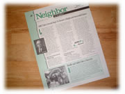

| ..*..*.. 2002年8月2日(金) 晴れ ..*..*.. うちのアパートの信号をはさんですぐのところに、AMDという会社があります。パソコンのチップと言えば、インテルかAMDかというほどの大きい会社なので、みなさんもご存じかな。 さて、この会社が季刊で発行している「Neighbor to Neighber(近所から近所へ)」という右の写真のような見開きの冊子が、うちのにも届きます。もちろん、AMDにとっていいことしか書いていませんが、こういうのって微笑ましいものです。 AMDはどこと提携したなどの会社の情報から、会社の近くにこういう場所があるなどの情報、月ごとの催しものなどが載っていて、ちょっと地域の人間になったような気がします。 また、○○の小学生を招待したとか、学校に関するものも多く書かれています。 そういえば、うちの会社にもよく子供たちが見学に来て、「ここのコンピュータルームでは○○をしているんですよ」「ここではこういうことをしています」「ソフト（アプリケーション）ができるまでのプロセスは。。。」などと説明したりしてるんだけど、こういうのってまさに地域に密着した教育ですよね。 昔、パリの美術館に行ったとき、地元の子供たちが先生につれられて見学してるのを見て、こんな小さいうちからこういう美術館を観ていたら、それが日常になって芸術家も多く生まれるんだろう、なんて思ったものだけど、確かに、地域が子供を育てるってありますよね。 私なんて、シリコンバレーに来て初めて、ソフト(アプリケーション)ができる過程を学んだものだけど、ここに住んでいれば、子供のころから当たり前のように、コンピュータに関することを学ぶことができるんですよね。 |